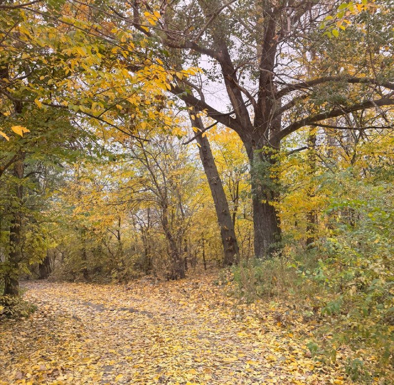
01
Общество и городская среда · событие дня


Другие заявления: — Украина не будет признавать утраченные территории российскими; — «Дружить с Путиным» – это личное решение Трампа; — Украина за последние 90 дней получила от своего стратегического партнера 24 ракеты Patriot; — Украине нужны сильная армия, сильный президент и сильный народ.…
Хотим придать огласки и попросить помощи! Хотят снести детскую площадку на которой играют дети !!!!…
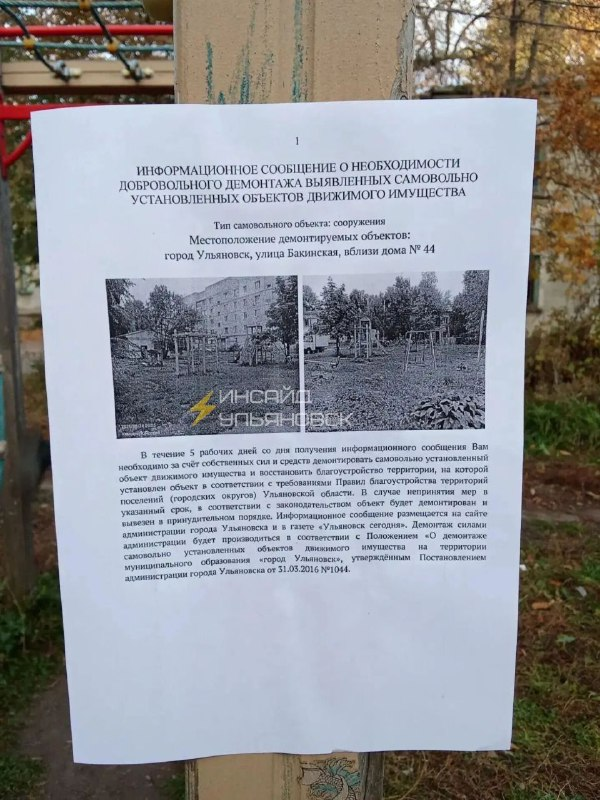
О том, как опыт из цеха учит точности в кабинетах власти, почему умение сказать «нет» порой даётся тяжелее любых решений.
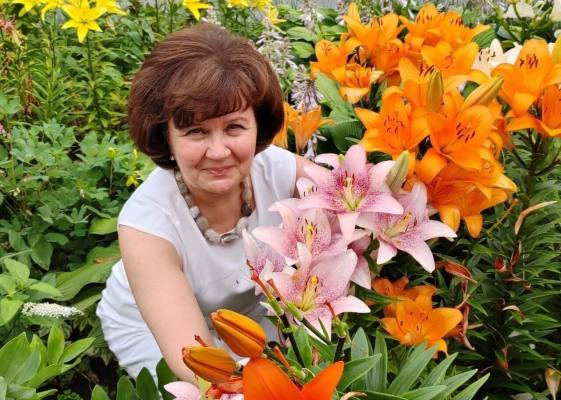
О работе по данному направлению губернатору Алексею Русских доложили на заседании штаба по комплексному развитию Ульяновской области 19 октября.…

Исполняя указание главы города Александра Болдакина в преддверии прогнозируемых на следующей неделе синоптиками осадков, дорожные службы Ульяновска готовили системы ливневой канализации к отведению стоков, сообщили в пресс-службе мэрии.…
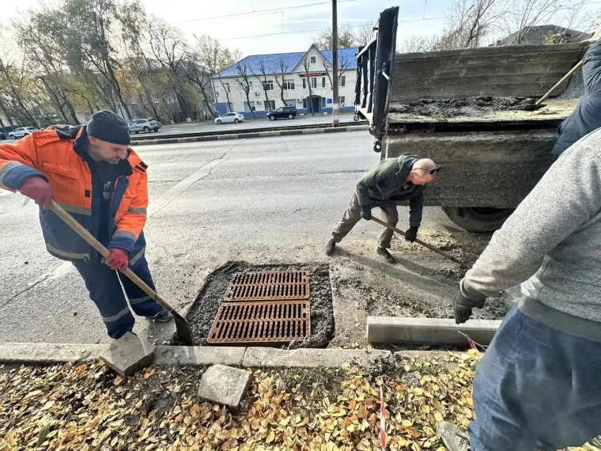
государственных и муниципальных заказчиков, ежегодный объём закупок превышает 40 млрд рублей.…

22 октября губернатору Алексею Русских в ходе совещания по финансово-экономическим вопросам доложили о качестве управления финансами через совершенствование закупочной деятельности.…


Реклама. ООО "Тимерленд". ИНН 7325173908.…

Просто тем, что по воле судьбы, а скорее по воле человека, оказался на улице. Оказался бездомным, никому не нужным.…


Они представляют двигатель ПД-8 в номинации «Наука и технологии», до 9 ноября можно отдать свой голос за наш авиапром…


В одном месте одна информация, в другом — совершенно другая. С чем это связано?…


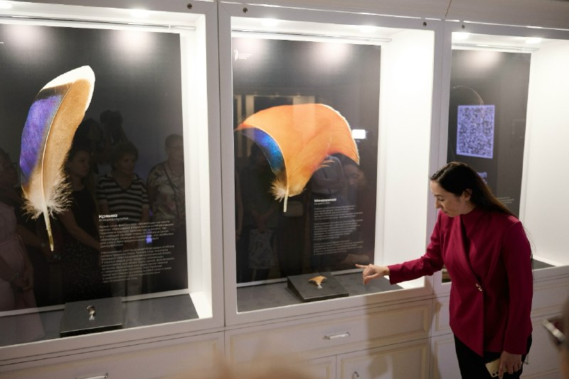
В неё вошли подробные снимки 15 самых интересных перьев из музейной коллекции. Проект реализует Культурный фонд имени Гончарова по гранту Президентского фонда природы.…
Птилология». На ней представлены результаты работы над определителем перьев более чем 200 видов пернатых.…
Наш театр постарался воплотить необычайности этих небывальщин с хулиганским задором; на пространстве малом, но которое словно ширится и растёт с каждой минутой действа.…
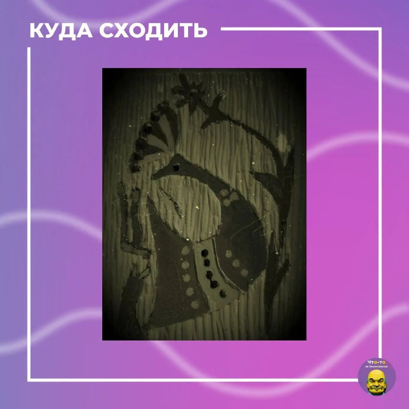
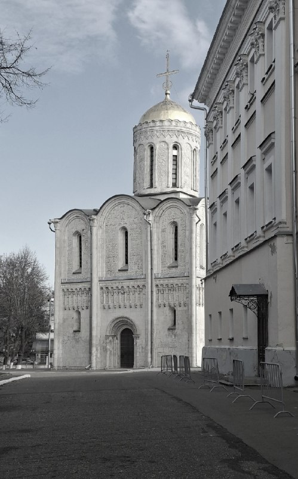
Места падения зафиксировали в Новоспасском, Николаевском, Чердаклинском и Сенгилеевском районах. При визуальном обнаружении пролёта БПЛА необходимо немедленно сообщать по номеру 112.…
Места падения обломков зафиксированы в четырёх районах региона: Новоспасском, Николаевском, Чердаклинском и Сенгилеевском.…

Благодарю дежурные силы ПВО и наши мобильные огневые группы за слаженную работу.…
На территории региона действует режим «Беспилотная опасность».
В рамках оперативно–профилактической операции сотрудники ОМВД России по Заволжскому району города Ульяновска выявили нарушение миграционного законодательства.…

По информации Минобороны, вражеские беспилотники были сбиты также над территорией Ульяновской области.
Нарушение сняли на видео и выложили в соцсети, после чего водителем заинтересовалась Госавтоинспекция.…

Ролик заметили сотрудники Госавтоинспекции: они установили личность 20-летнего автомобилиста и задержали его.…


В октябре в работе «выездной поликлиники» в Мелекесском районе был задействован 21 специалист из 8 медицинских учреждений города Ульяновска.…
Четверо из пяти госпитализированных остаются в медучреждениях Ульяновска после наезда 20 октября легкового автомобиля на пешеходов, стоявших на разделительной полосе в Заволжском районе города.…
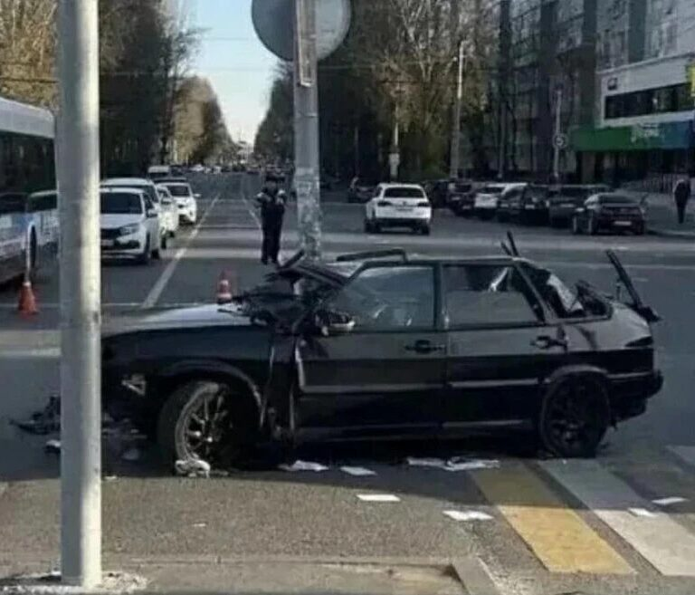

Ленина» рассказали , как «маленькая буковка» ломала судьбы будущей элиты Российской империи и почему её отмена в 1918 году вызвала ожесточенное сопротивление интеллигенции.…


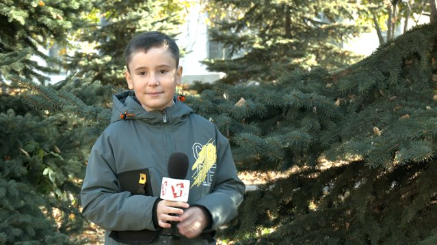
В минувшую пятницу, 16 октября, в Среднеякушкинской казачьей кадетской средней школы имени И.Я.Кремлякова состоялось торжественное мероприятие «День призывника - 2026».…

Сам по себе это обычный спонсорский контент. Интересна механика, которую букмекер запустил вокруг турнира.…
На маршруте спортсменов ждали грозы, дожди, снег и встречи с дикими животными — медведем, турами, горными кодами и другими представителями местной фауны.…

Новый статус подтверждает высокие результаты школы в подготовке борцов греко-римского стиля, их регулярные победы и попадание в сборную России.…


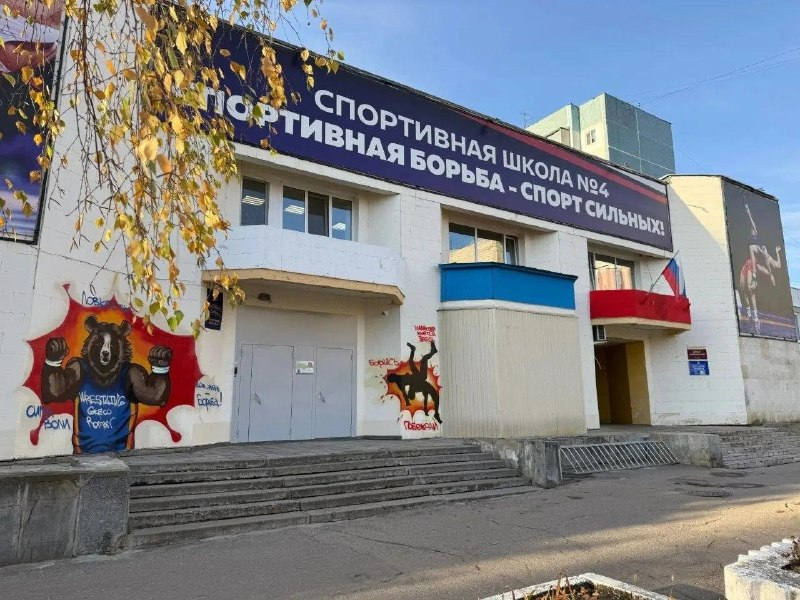
Для Ярослава это был дебют на международной арене, и он сразу же показал высочайший уровень: провёл 4 тяжелейших боя и одержал 3 уверенные победы.…
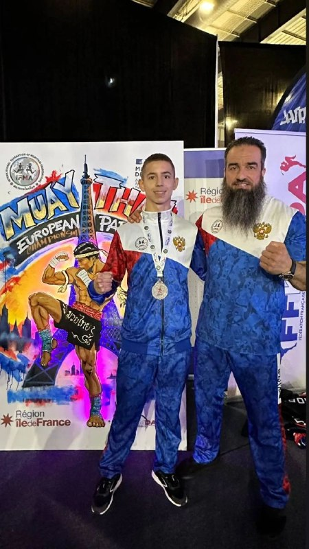
Поздравляю руководство, тренерский состав и воспитанников спортивной школы с этим значимым и весомым достижением.…

22 октября в Красноярске прошли всероссийские соревнования «Кубок Героев» на призы заслуженного мастера спорта России Андрея Арбузова.…
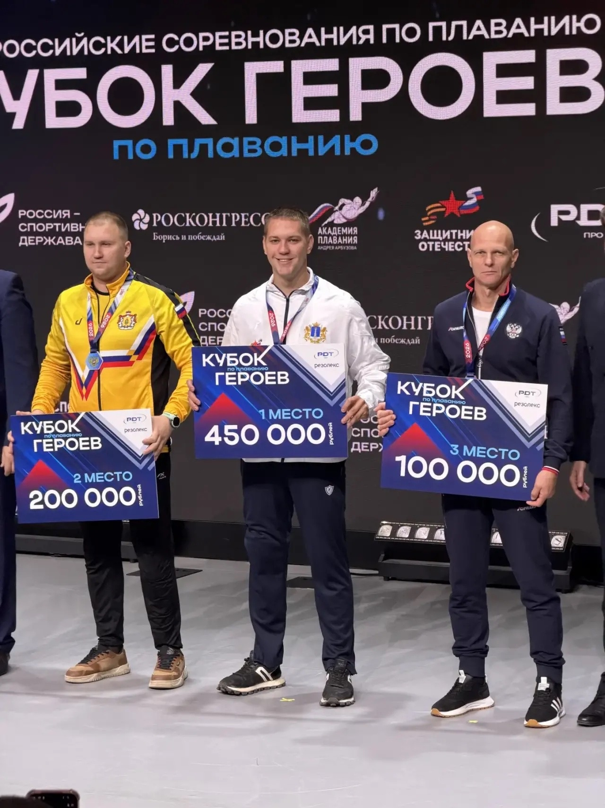
| Тема | Завтра | Ожидание | Уверенность |
|---|---|---|---|
| Транспорт и дороги | ↓ спад | ~18.6 упоминаний | средняя |
| БПЛА и воздушные угрозы | ↑ рост | ~33.3 упоминаний | средняя |
| Погода | ↓ спад | ~7.8 упоминаний | средняя |
| Медицина | ↓ спад | ~4.2 упоминаний | средняя |
| Суды и криминал | ↑ рост | ~36.1 упоминаний | средняя |
| Спорт | ↓ спад | ~15.6 упоминаний | средняя |